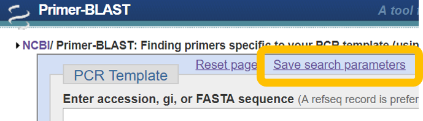
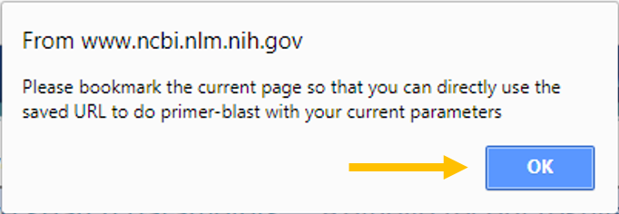
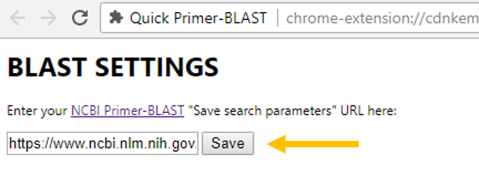

BLAST SETTINGS
Set custom Primer-BLAST settings
Step 1: Go to NCBI Primer-BLAST and enter your custom settings:
Step 2: Click "Save search parameters:

Step 3: Click "OK" on the popup

Step 4: In the new tab that opens, copy the URL
Step 5: Paste that URL in the box at the top of this page and click "Save"

Step 6: Primer-BLAST away!